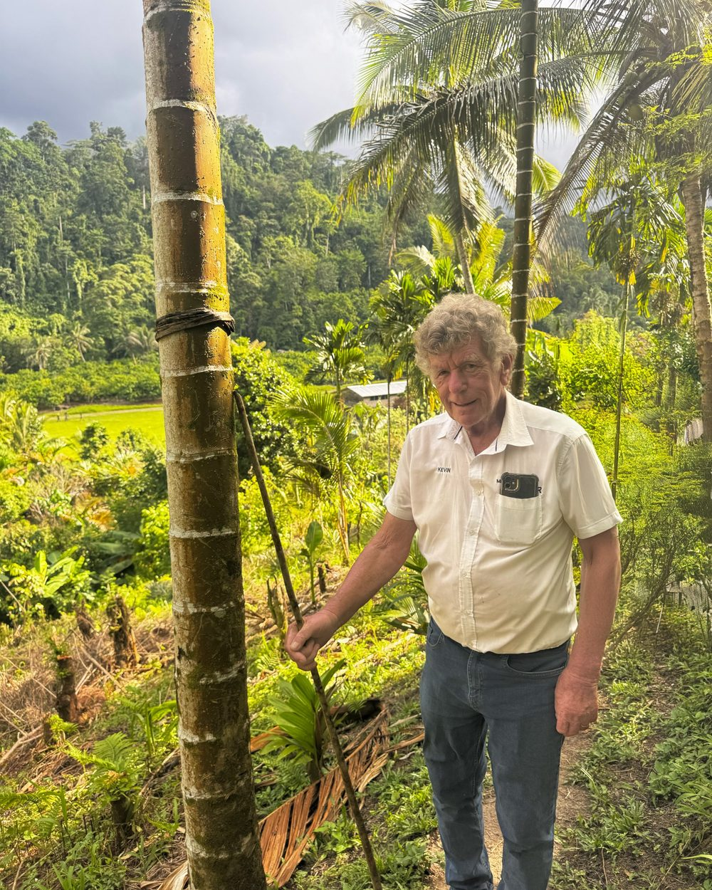
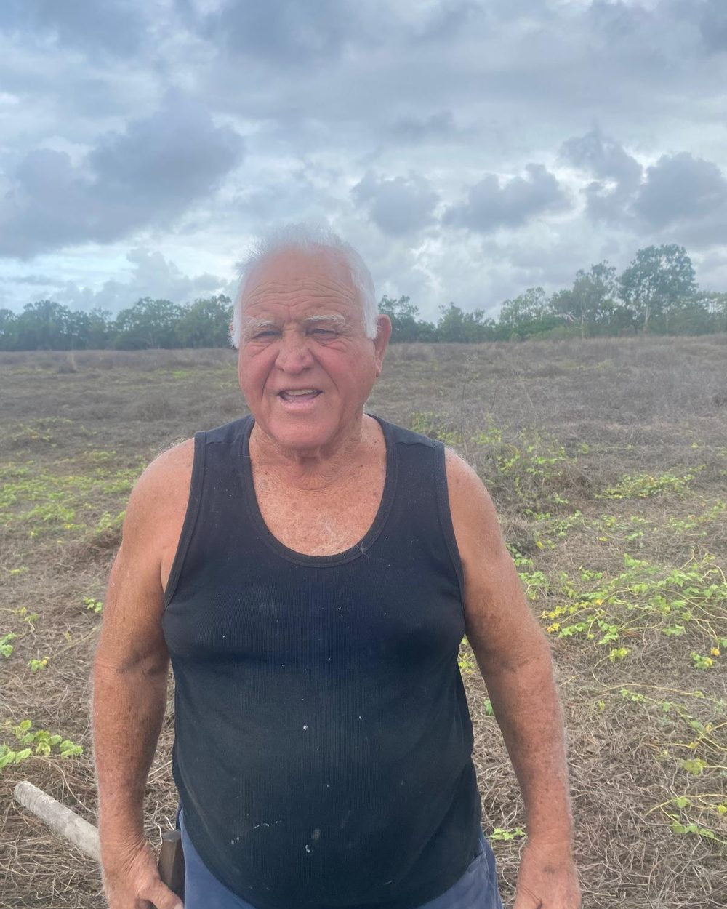

Ninety-four acres of moringa, held together by a co-operative.
Every plantation is one numbered acre of six rows. Each is owned by a member and looked after by a named farm manager. One member, one vote.
What is the co-operative?
Moringa Farmers Australia Co-Operative is a common interest group of people building a new industry for Australia. It is buying a 118 acre farm at 11 Nevada Road, Guthalungra, in North Queensland, to grow moringa for leaf powder and oil.
The co-op will own the land on four titles, and its members own the land and the trees through it. Moringa products have a 5,000 year history of use for their health benefits, and the future production could produce better than expected returns from an Australian farming enterprise, giving members a recurring income from a unique, nutritious product. Membership is limited. The plantations are fully maintained and managed by a professional farm team, from planting through to commercial production.
The farm is on Bowen's red soil. We grow two kinds of moringa tree: Moringa oleifera for the leaf and Moringa peregrina for the oil.


How does a plantation work?
One acre, six rows. Every plantation has the same layout, with about 1,000 trees. Rows 1 to 4 are Moringa oleifera, grown for leaf powder. Rows 5 and 6 are Moringa peregrina, a variety that sets abundant seed pods, grown for oil.
A plantation number and a row range say exactly where a harvest came from. That is how the co-op keeps track of 94 acres.

The 94 plantations as the co-op sees them: a block of 84, a stand of 8 and a stand of 2. The gold tile is one member's plantation.
What is moringa, and what happens to it on the farm?
Moringa is a fast-growing, drought tolerant, sub-tropical tree, often called the Tree of Life. It can grow up to 3.6 metres in its first year. Here is how the farm turns it into powder and oil.
Grow
- 4 rows of Moringa oleifera, for leaf
- 2 outer rows of Moringa peregrina, for oil seed
Harvest
- One-person over-the-row machine
- About 1,000 trees an hour
- Leaf is cut about every 8 weeks
Dry
- Gas and vacuum drying at about 60 degrees Celsius
- Keeps the leaf's nutrient profile
- About 8 kg of green leaf makes about 1 kg of powder
Press
- 20 to 30 seeds in each pod
- 30 to 40 percent of each seed is oil
- Used in cosmetics and food
A food crop with a long history.
- Cultivated for over 5,000 years, mainly in India, Malaysia, Africa and Thailand.
- Used as a food source and a natural dietary supplement, with a 5,000 year history of health benefits.
- Called the Tree of Life because it grows so quickly.
Powder, oil and animal feed.
- Leaf powder for food and supplement makers.
- Seed oil for cosmetics and food.
- Natural pet food supplements, and a natural feed additive for commercial poultry and other animals that improves their immune system and wellness.
- Seed oil is prized in the cosmetics industry in Europe and the USA for its anti-aging and skin conditioning properties.
A young industry in Australia.
- The moringa market is in excess of $5 billion a year across the USA, Europe and Asia, in the health food and cosmetic industries, and is expected to grow substantially in years to come.
- It is only in its infancy in Australia, a developing industry with local and export sales.
- Retail powder is listed online at around $30 for a 100 gram tub, and oil in supermarkets at around $30 for a 50 ml bottle. These are retail shelf prices, not a forecast for the co-op.
The same seasons as India.
- India is the world's largest producer, with a wet season and a dry season like Guthalungra.
- Moringa does best where days average about 28 degrees and nights stay above about 6.
- Guthalungra is about halfway between Mackay and Townsville.
Leaf in six months, then for years.
- First leaf harvest about 6 months after planting. Each seed pod holds 20 to 30 seeds.
- Production builds each year over a commercial life of about 20 years.
Does the farm have enough water?
Water is the most important asset of any farm, and this one has plenty. It was a vegetable farm before, so the irrigation is already in. The farm sits on 118 acres on four titles, and each plantation is about 1,000 trees on about 1.1 acres.
- Underground mains. 100 mm underground mains run through the property, with connection points throughout.
- River licence. There is a licence to draw water from the Elliott River on the property boundary.
- Bore. A 20,000 litre an hour bore sits in the centre of the property.
- Standby dam. A 300 megalitre dam with an electric pumping station is there for extended drought. The farm's own estimate is that it would carry the farm through more than three years of deficient rain.
- Rain. Average rainfall is 900 mm a year, which on its own supports natural growth.
- Soil. Rich, well drained soil.

Who owns what, and who runs the farm?
Members
Members own the plantations. Each member has one vote on the co-operative's decisions.
The co-operative
The co-op holds the 94 plantations and is run under its own rules.
The manager
Moringa Tree of Life Pty Ltd, based in Bowen, manages the farm day to day.
How do members get paid?
A member acquires a plantation of 1,000 trees for a one time outlay of $49,500. There are no further contributions or recurring fees.
The co-operative distributes its net profits after operating costs: 60 percent to the members and 40 percent to the management company, Moringa Tree of Life Pty Ltd, which covers farm labour, irrigation, maintenance, harvesting and processing.
Harvesting starts about 6 months after planting and grows as the trees do. Here is what the farm anticipates for one plantation.
These are anticipated figures, not guarantees. Actual yields, prices and costs will vary. The full disclosure document sets out the basis for them.
What about tax?
Payments to members are unfranked dividends, and each member pays their own tax. Your accountant or financial adviser can tell you what applies to you, including deductions such as travel to visit your plantation.
Where can I see the numbers?
A full disclosure document is available to prospective members. Ask for it using the form below and we will send it in writing.
Can I trace what grows on my plantation?
Yes. Grown by the acre, traceable to the row. Every harvest is recorded against a plantation number, a row range and a month, and members can follow their own acre the same way.
Who looks after the acres?

Kevin Murphy
Kevin is chief executive of Moringa Tree of Life Pty Ltd, the company that manages the farm for the co-operative. He is one of its two directors and a founding member of the co-op.

Neville Mulley
Neville has decades of farming experience in North Queensland, growing bananas, sugar cane, vegetables and mangoes. He runs the farm day to day.
Where can I learn more about moringa?
Four outside videos on how moringa is grown and used. They are made by other people and are not about this co-operative.
How do I join?
Send us your details and we will reply in writing with the co-operative's information pack. Terms are set out in the offer documents we send to people who enquire.
Come and see the farm first. Members are welcome to visit, and to bring a mobile home and stay on the farm while they look around the surrounding countryside.
Places are limited. Memberships are limited and can only be secured by a deposit or full payment. A deposit is 50 percent ($24,750), with the balance due within 6 months, when the 1,000 trees are planted and growing.
This is a decision that affects your future income, so please speak to your accountant or financial adviser before you join.
Prefer to talk? Call 0423 679 780 or kevin@aussiemoringa.com